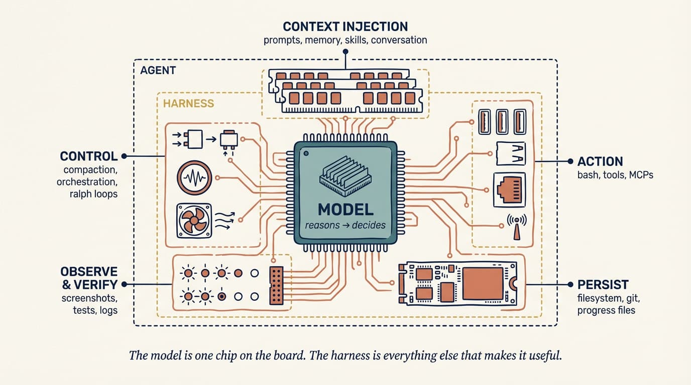
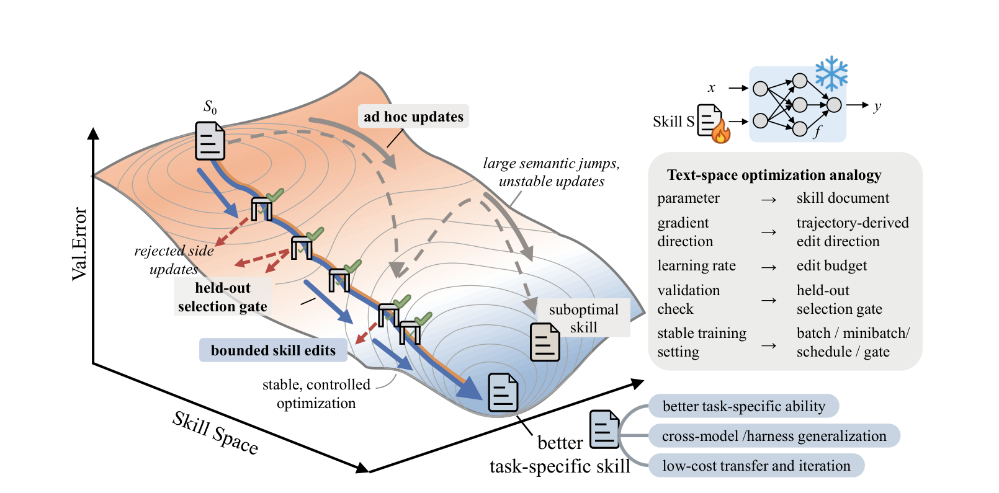
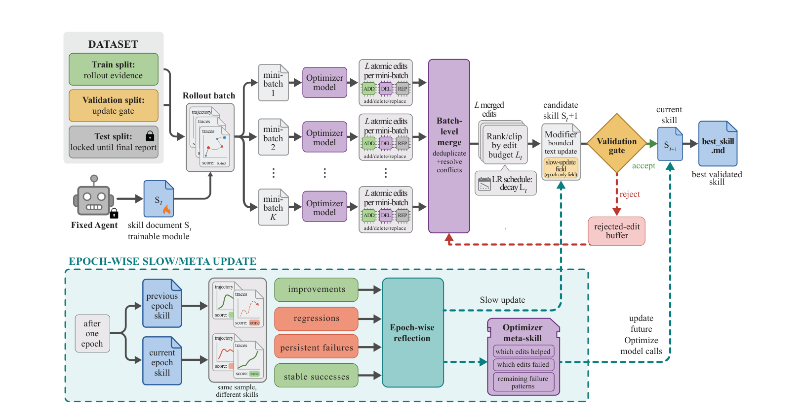
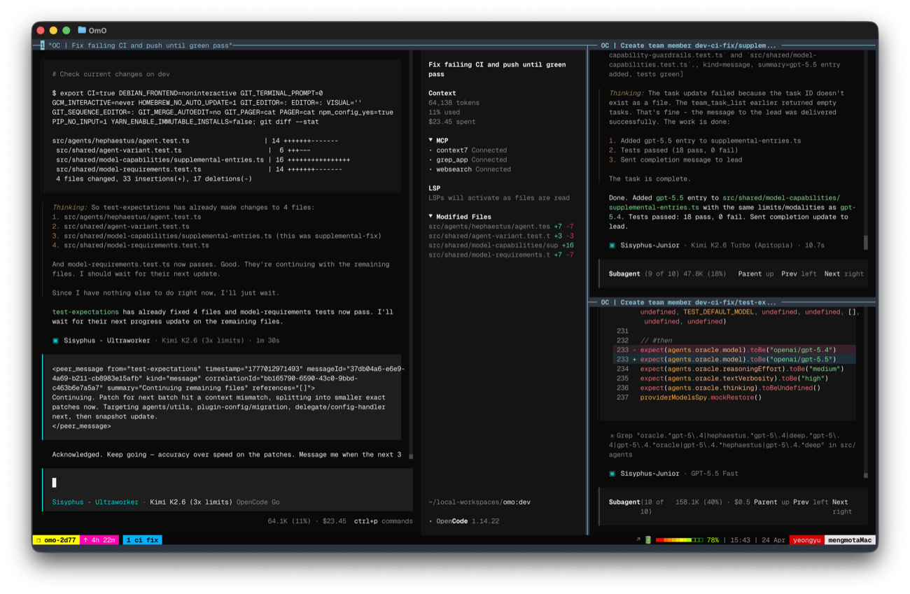
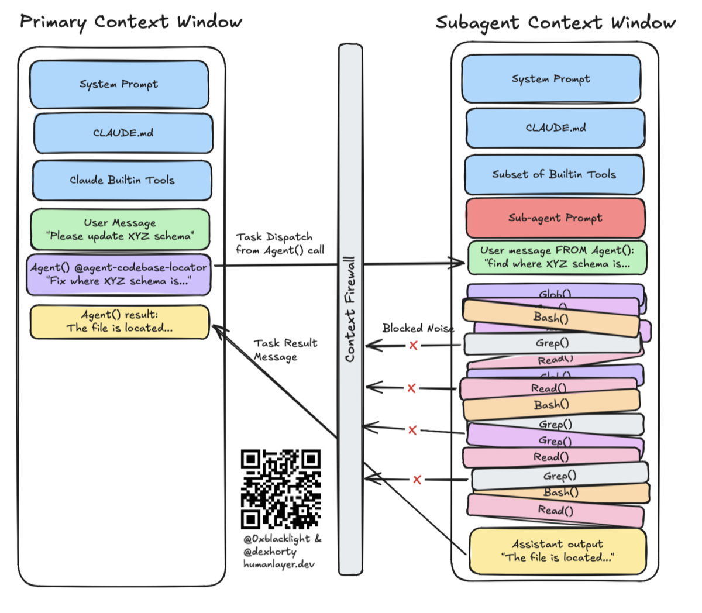

에이전트 하네스로서의 코드
Toward Executable, Verifiable, and Stateful Agent Systems
프롬프트에서 하네스로
모델만으로는 에이전트가 되지 않는다
Agent = Model + Harness
"모델이 아닌 모든 것이 하네스다" — LangChain

모델은 보드 위 칩 하나 — 컨텍스트 주입(프롬프트·메모리·스킬)·제어(오케스트레이션·루프)·행동(Bash·도구·MCP)·관찰/검증·영속이 하네스
하네스는 모델의 빈칸을 채운다

모델 혼자 못 하는 것마다 하네스가 다리를 놓는다 — 파일·git · 코드 실행 · 샌드박스 · 메모리·웹검색·MCP · 컴팩션·스킬 · 계획·검증
가이드는 예방하고, 센서는 교정한다
코드의 3가지 구조적 우위
EXECUTABLE실행 가능
모델 출력이 실제 동작이 된다
의도가 실제 행동으로 검증됨
VERIFIABLE검증 가능
성공/실패를 기계적으로 판정 가능
실패 진단 + 피드백 가능
STATEFUL상태 보존
프로그램 = 작업 진행의 영속적 표현
단계 간 정보 유지
대체가 아닌 역할 분담 — 인프라 층은 코드
| 기준 (인프라 층 역할) | 자연어 프롬프트 | 코드 |
|---|---|---|
| 실행 가능? | ✕해석 필요 | ✓직접 실행 |
| 검증 가능? | ✕주관적 판단 | ✓통과/실패 명확 |
| 상태 보존? | ✕매번 재설명 | ✓파일 / DB / git |
| 재현 가능? | ✕비결정적 | ✓결정적 |
| 조합 가능? | △길어지면 충돌 | ✓모듈화 |
그럼 자연어는? — 적응 층(전략·휴리스틱)에서 일한다 → 다음 섹션
코드가 하네스가 되는 구체적 형태
🪝 훅 pre-commit · post-edit
코드로 작성된 규칙의 자동 집행
EXECUTABLE🔍 린터 / 타입체커
코드가 에이전트 출력을 검증
VERIFIABLE🧪 테스트
코드가 "완료 조건"을 정의
EXECUTABLE + VERIFIABLE📂 파일시스템 / Git / 메모리 파일
작업 진행 상태가 코드·파일로 영속화
STATEFUL→ Böckeler의 "센서"가 전부 코드인 이유
가중치 대신 스킬 문서를 학습시킨다
스킬 = 에이전트가 읽는 자연어 지침 문서(Markdown) — AGENTS.md · SKILL.md처럼 전략·노하우·도메인 지식을 담는다
모델 파인튜닝 가중치를 갱신
GPU 비용 큼 · 모델마다 재학습
catastrophic forgetting 위험 · 폐쇄형 모델 불가
스킬 최적화 외부 텍스트를 갱신
저렴 · 모델 갈아타도 재사용
가중치 불변(안전) · 폐쇄형 모델도 적용
비유하면 "모델 재교육"이 아니라 "더 나은 업무 매뉴얼 작성" — 같은 모델도 매뉴얼이 좋으면 성과가 달라진다
최적화 루프: 딥러닝과 똑같은 구조

신경망 학습 ↔ 스킬 최적화 대응: 파라미터→스킬 문서 · 그래디언트→편집 방향 · 학습률→편집 예산 · 검증→홀드아웃 게이트 · 모델은 Frozen(❄), 스킬만 학습(🔥)
최적화 파이프라인: 스킬을 어떻게 학습시키나

① 롤아웃(실행·채점) → ② 미니배치 반성(실패/성공 분리) → ③ ADD·DEL·REP 편집 → ④ 편집 예산으로 랭킹·클립 → ⑤ 검증 게이트(점수 오를 때만 수용) → best_skill.md. 거부된 편집은 버퍼에 저장(음의 피드백), 에포크마다 slow/meta 업데이트
결과: 어떤 환경에서도 최고 · 최종 성능은 대등
스킬 전 베이스라인 · SkillOpt 향상분 | GPT-5.5, 공통 5개 벤치마크 평균. Claude Code는 향상폭이 작은 게 아니라 베이스라인(57.8)이 가장 높을 뿐 — 최종은 셋 다 대등
핵심 통찰: 세 계층의 분리
모델은 고정 · 코드 하네스는 인프라 · 자연어 스킬은 적응 계층
oh-my-openagent 안에 무엇이 들어있나
전문 에이전트 11종 — 역할 분담
빌트인 MCP 5종 — 도구
라이프사이클 훅 54+ — 자동 검증
이론 → 실제: 앞서 본 개념 그대로
AGENTS.mdSKILL.md 스킬 시스템 (playwright·git-master…)
새 개념 없음 — 이론·증거·제품이 한곳에서 만난다
서브에이전트 = 컨텍스트 방화벽

ulw 한 단어로 시동되는 파이프라인
시사점 3가지
"더 좋은 모델"만이 답이 아니다
동일 모델, 하네스만 교체 → Terminal Bench Top 30 → Top 5
코드가 최적의 하네스 매체다
Executable · Verifiable · Stateful
하네스는 최적화 가능한 대상이다
SkillOpt: 체계적 텍스트-공간 최적화